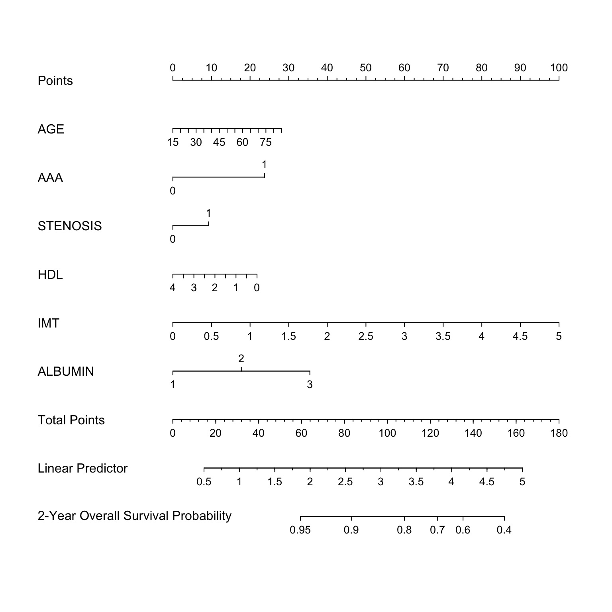
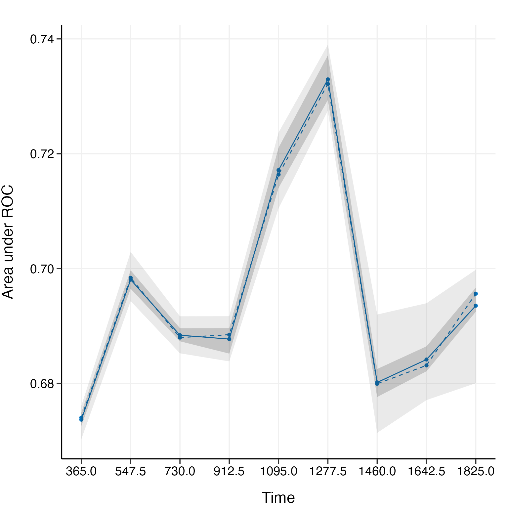
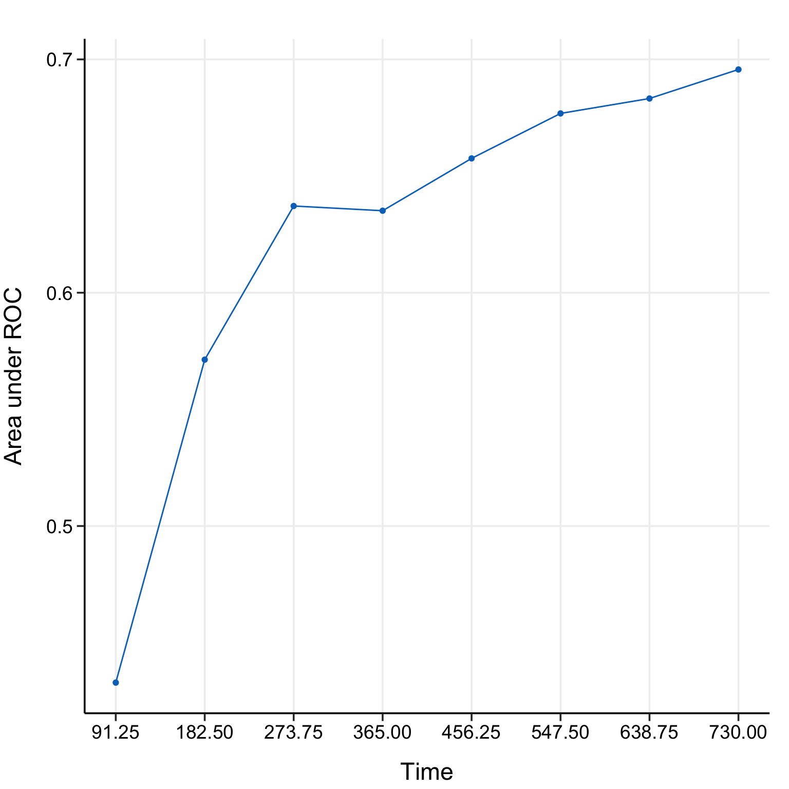
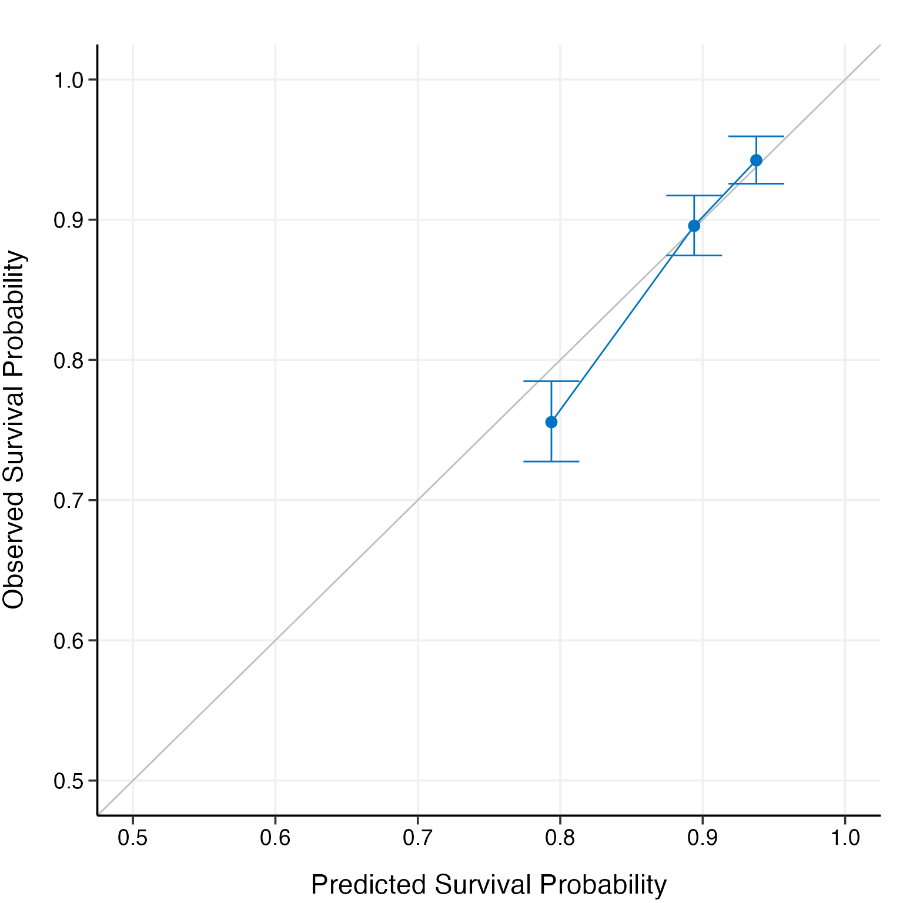
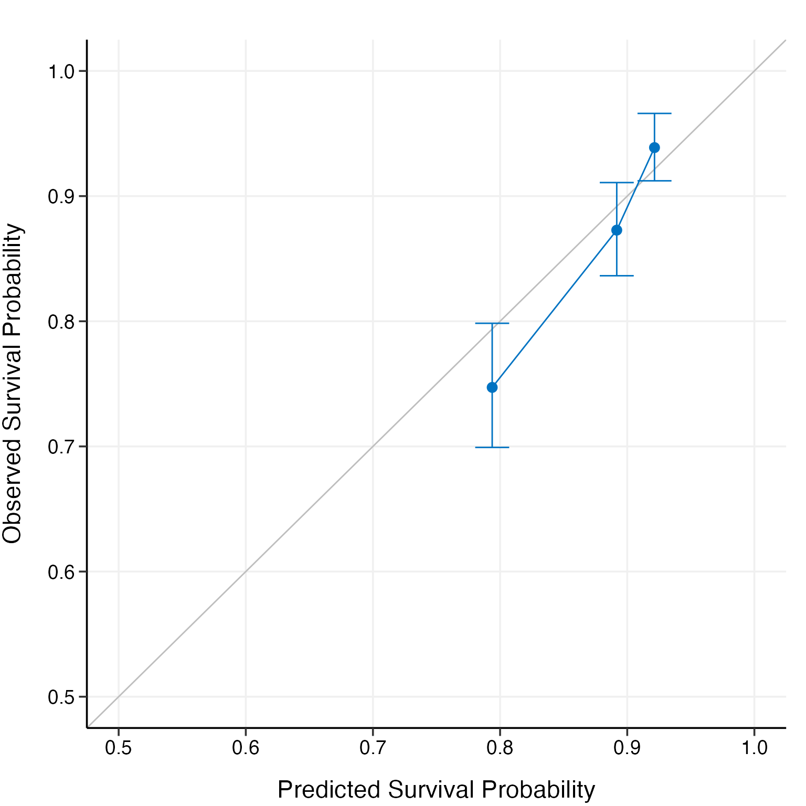
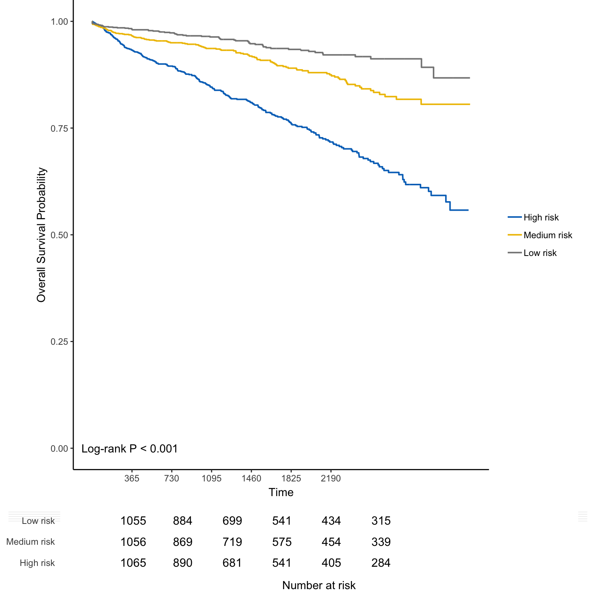
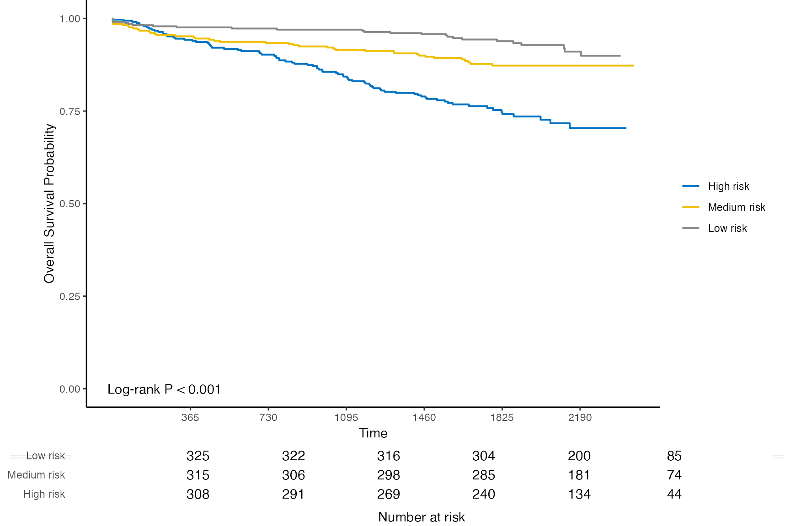
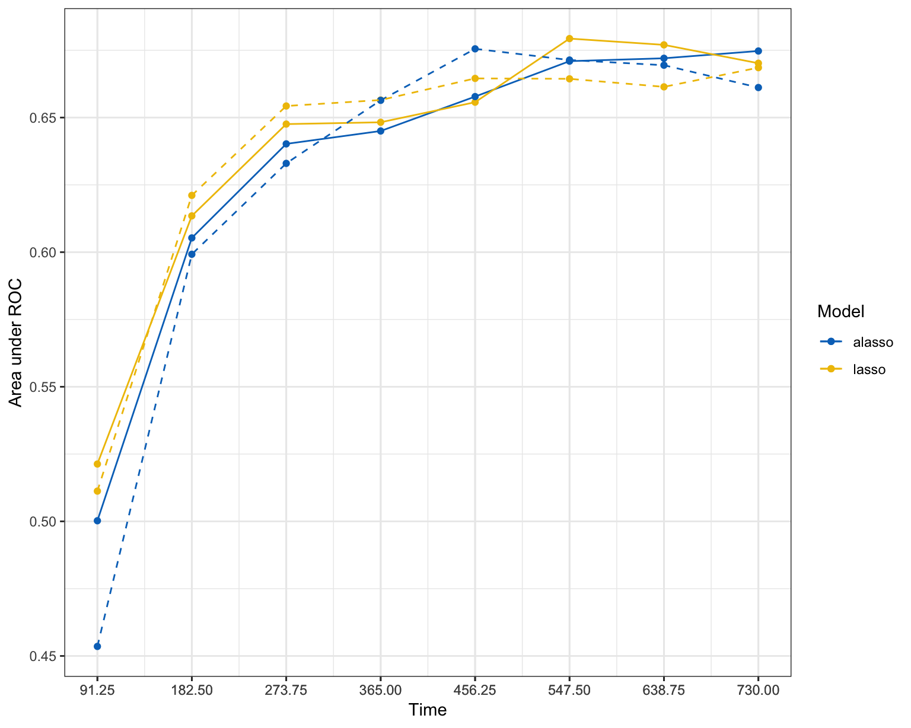
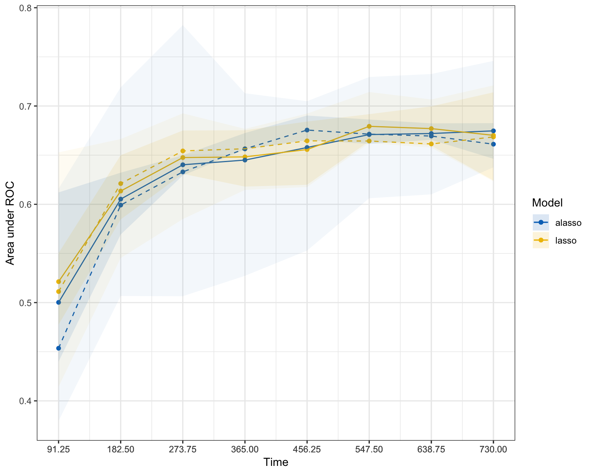
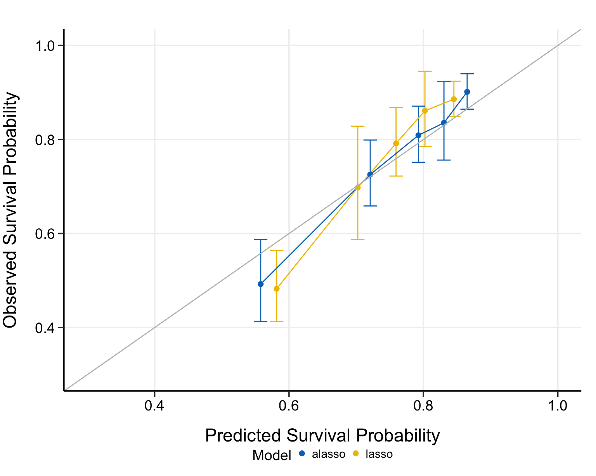

vignettes/hdnom.Rmd
hdnom.RmdIt is a challenging task to model the emerging high-dimensional clinical data with survival outcomes. For its simplicity and efficiency, penalized Cox models are significantly useful for accomplishing such tasks.
hdnom streamlines the workflow of high-dimensional Cox model building, nomogram plotting, model validation, calibration, and comparison.
To build a penalized Cox model with good predictive performance, some parameter tuning is usually needed. For example, the elastic-net model requires to tune the \(\ell_1\)-\(\ell_2\) penalty trade-off parameter \(\alpha\), and the regularization parameter \(\lambda\).
To free the users from the tedious and error-prone parameter tuning process, hdnom provides several functions for automatic parameter tuning and model selection, including the following model types:
| Function name | Model type | Auto-tuned hyperparameters |
|---|---|---|
fit_lasso() |
Lasso | \(\lambda\) |
fit_alasso() |
Adaptive lasso | \(\lambda\) |
fit_enet() |
Elastic-net | \(\lambda\), \(\alpha\) |
fit_aenet() |
Adaptive elastic-net | \(\lambda\), \(\alpha\) |
fit_mcp() |
MCP | \(\gamma\), \(\lambda\) |
fit_mnet() |
Mnet (MCP + \(\ell_2\)) | \(\gamma\), \(\lambda\), \(\alpha\) |
fit_scad() |
SCAD | \(\gamma\), \(\lambda\) |
fit_snet() |
Snet (SCAD + \(\ell_2\)) | \(\gamma\), \(\lambda\), \(\alpha\) |
fit_flasso() |
Fused lasso | \(\lambda_1\), \(\lambda_2\) |
In the next, we will use the imputed SMART study data to demonstrate a complete process of model building, nomogram plotting, model validation, calibration, and comparison with hdnom.
Load the packages and the smart dataset:
data("smart")
x <- as.matrix(smart[, -c(1, 2)])
time <- smart$TEVENT
event <- smart$EVENT
y <- survival::Surv(time, event)The dataset contains 3873 observations with corresponding survival outcome (time, event). 27 clinical variables (x) are available as the predictors. See ?smart for a detailed explanation of the variables.
Fit a penalized Cox model by adaptive elastic-net regularization with fit_aenet() and enable the parallel parameter tuning:
suppressMessages(library("doParallel"))
registerDoParallel(detectCores())
fit <- fit_aenet(x, y, nfolds = 10, rule = "lambda.1se", seed = c(5, 7), parallel = TRUE)
names(fit)## [1] "model" "alpha" "lambda" "model_init" "alpha_init"
## [6] "lambda_init" "pen_factor" "type" "seed" "call" Adaptive elastic-net includes two estimation steps. The random seed used for parameter tuning, the selected best \(\alpha\), the selected best \(\lambda\), the model fitted for each estimation step, and the penalty factor for the model coefficients in the second estimation step are all stored in the model object fit.
Before plotting the nomogram, we need to extract some necessary information about the model: the model object and the selected hyperparameters:
Let’s generate a nomogram object with as_nomogram() and plot it:
nom <- as_nomogram(
fit, x, time, event,
pred.at = 365 * 2,
funlabel = "2-Year Overall Survival Probability"
)
plot(nom)
According to the nomogram, the adaptive elastic-net model selected 6 variables from the original set of 27 variables, effectively reduced the model complexity.
Information about the nomogram itself, such as the point-linear predictor unit mapping and total points-survival probability mapping, can be viewed by printing the nom object directly.
It is a common practice to utilize resampling-based methods to validate the predictive performance of a penalized Cox model. Bootstrap, \(k\)-fold cross-validation, and repeated \(k\)-fold cross-validation are the most employed methods for such purpose.
hdnom supports both internal model validation and external model validation. Internal validation takes the dataset used to build the model and evaluates the predictive performance on the data internally with the above resampling-based methods, while external validation evaluates the model’s predictive performance on a dataset which is independent to the dataset used in model building.
validate() allows us to assess the model performance internally by time-dependent AUC (Area Under the ROC Curve) with the above three resampling methods.
Here, we validate the performance of the adaptive elastic-net model with bootstrap resampling, at every half year from the first year to the fifth year:
val_int <- validate(
x, time, event,
model.type = "aenet",
alpha = alpha, lambda = lambda, pen.factor = adapen,
method = "bootstrap", boot.times = 10,
tauc.type = "UNO", tauc.time = seq(1, 5, 0.5) * 365,
seed = 42, trace = FALSE
)
print(val_int)## High-Dimensional Cox Model Validation Object
## Random seed: 42
## Validation method: bootstrap
## Bootstrap samples: 10
## Model type: aenet
## glmnet model alpha: 0.15
## glmnet model lambda: 0.4322461
## glmnet model penalty factor: specified
## Time-dependent AUC type: UNO
## Evaluation time points for tAUC: 365 547.5 730 912.5 1095 1277.5 1460 1642.5 1825## Time-Dependent AUC Summary at Evaluation Time Points
## 365 547.5 730 912.5 1095 1277.5
## Mean 0.6719884 0.6964906 0.6841211 0.6846299 0.7119032 0.7307381
## Min 0.6656145 0.6900480 0.6743054 0.6766896 0.7009340 0.7206457
## 0.25 Qt. 0.6706340 0.6951501 0.6836948 0.6815774 0.7085533 0.7292635
## Median 0.6719498 0.6973106 0.6852666 0.6864537 0.7137401 0.7313070
## 0.75 Qt. 0.6738873 0.6977342 0.6858319 0.6871891 0.7153364 0.7333464
## Max 0.6767791 0.7007197 0.6895877 0.6895799 0.7183999 0.7399907
## 1460 1642.5 1825
## Mean 0.6779095 0.6801867 0.6968828
## Min 0.6686938 0.6763450 0.6866227
## 0.25 Qt. 0.6723307 0.6777257 0.6913125
## Median 0.6802664 0.6802311 0.6980555
## 0.75 Qt. 0.6820302 0.6827378 0.7020305
## Max 0.6844907 0.6836347 0.7049328The mean, median, 25%, and 75% quantiles of time-dependent AUC at each time point across all bootstrap predictions are listed above. The median and the mean can be considered as the bias-corrected estimation of the model performance.
It is also possible to plot the model validation result:
## 365 547.5 730 912.5 1095 1277.5
## Mean 0.6719884 0.6964906 0.6841211 0.6846299 0.7119032 0.7307381
## Min 0.6656145 0.6900480 0.6743054 0.6766896 0.7009340 0.7206457
## 0.25 Qt. 0.6706340 0.6951501 0.6836948 0.6815774 0.7085533 0.7292635
## Median 0.6719498 0.6973106 0.6852666 0.6864537 0.7137401 0.7313070
## 0.75 Qt. 0.6738873 0.6977342 0.6858319 0.6871891 0.7153364 0.7333464
## Max 0.6767791 0.7007197 0.6895877 0.6895799 0.7183999 0.7399907
## 1460 1642.5 1825
## Mean 0.6779095 0.6801867 0.6968828
## Min 0.6686938 0.6763450 0.6866227
## 0.25 Qt. 0.6723307 0.6777257 0.6913125
## Median 0.6802664 0.6802311 0.6980555
## 0.75 Qt. 0.6820302 0.6827378 0.7020305
## Max 0.6844907 0.6836347 0.7049328
The solid line represents the mean of the AUC, the dashed line represents the median of the AUC. The darker interval in the plot shows the 25% and 75% quantiles of AUC, the lighter interval shows the minimum and maximum of AUC.
It seems that the bootstrap-based validation result is stable: the median and the mean value at each evaluation time point are close; the 25% and 75% quantiles are also close to the median at each time point.
Bootstrap-based validation often gives relatively stable results. Many of the established nomograms in clinical oncology research are validated by bootstrap methods. \(K\)-fold cross-validation provides a more strict evaluation scheme than bootstrap. Repeated cross-validation gives similar results as \(k\)-fold cross-validation, and usually more robust. These two methods are more applied by the machine learning community. Check ?hdnom::validate for more examples about internal model validation.
Now we have the internally validated model. To perform external validation, we usually need an independent dataset (preferably, collected in other studies), which has the same variables as the dataset used to build the model. For penalized Cox models, the external dataset should have at least the same variables that have been selected in the model.
For demonstration purposes, here we draw 1000 samples from the smart data and assume that they form an external validation dataset, then use validate_external() to perform external validation:
x_new <- as.matrix(smart[, -c(1, 2)])[1001:2000, ]
time_new <- smart$TEVENT[1001:2000]
event_new <- smart$EVENT[1001:2000]
val_ext <- validate_external(
fit, x, time, event,
x_new, time_new, event_new,
tauc.type = "UNO",
tauc.time = seq(0.25, 2, 0.25) * 365
)
print(val_ext)## High-Dimensional Cox Model External Validation Object
## Model type: aenet
## Time-dependent AUC type: UNO
## Evaluation time points for tAUC: 91.25 182.5 273.75 365 456.25 547.5 638.75 730## Time-Dependent AUC Summary at Evaluation Time Points
## 91.25 182.5 273.75 365 456.25 547.5 638.75
## AUC 0.4328241 0.5608442 0.6299909 0.6289888 0.6530596 0.6728417 0.6795879
## 730
## AUC 0.6922393## 91.25 182.5 273.75 365 456.25 547.5 638.75
## AUC 0.4328241 0.5608442 0.6299909 0.6289888 0.6530596 0.6728417 0.6795879
## 730
## AUC 0.6922393
The time-dependent AUC on the external dataset is shown above.
Measuring how far the model predictions are from actual survival outcomes is known as calibration. Calibration can be assessed by plotting the predicted probabilities from the model versus actual survival probabilities. Similar to model validation, both internal model calibration and external model calibration are supported in hdnom.
calibrate() provides non-resampling and resampling methods for internal model calibration, including direct fitting, bootstrap resampling, \(k\)-fold cross-validation, and repeated cross-validation.
For example, to calibrate the model internally with the bootstrap method:
cal_int <- calibrate(
x, time, event,
model.type = "aenet",
alpha = alpha, lambda = lambda, pen.factor = adapen,
method = "bootstrap", boot.times = 10,
pred.at = 365 * 5, ngroup = 3,
seed = 42, trace = FALSE
)
print(cal_int)## High-Dimensional Cox Model Calibration Object
## Random seed: 42
## Calibration method: bootstrap
## Bootstrap samples: 10
## Model type: aenet
## glmnet model alpha: 0.15
## glmnet model lambda: 0.4322461
## glmnet model penalty factor: specified
## Calibration time point: 1825
## Number of groups formed for calibration: 3## Calibration Summary Table
## Predicted Observed Lower 95% Upper 95%
## 1 0.7920403 0.7552327 0.7272514 0.7842905
## 2 0.8979794 0.8970591 0.8757388 0.9188985
## 3 0.9423162 0.9417877 0.9251980 0.9586749We split the samples into three risk groups. In practice, the number of risk groups is decided by the users according to their needs.
The model calibration results (the median of the predicted survival probability; the median of the observed survival probability estimated by Kaplan-Meier method with 95% CI) are summarized as above.
Plot the calibration result:

In practice, you may want to perform calibration for multiple time points separately, and put the plots together in one figure. See ?hdnom::calibrate for more examples about internal model calibration.
To perform external calibration with an external dataset, use calibrate_external():
cal_ext <- calibrate_external(
fit, x, time, event,
x_new, time_new, event_new,
pred.at = 365 * 5, ngroup = 3
)
print(cal_ext)## High-Dimensional Cox Model External Calibration Object
## Model type: aenet
## Calibration time point: 1825
## Number of groups formed for calibration: 3## External Calibration Summary Table
## Predicted Observed Lower 95% Upper 95%
## 1 0.7940258 0.7533312 0.7057400 0.8041316
## 2 0.8916822 0.8667762 0.8296887 0.9055215
## 3 0.9214927 0.9387588 0.9122184 0.9660715
The external calibration results have the similar interpretations as the internal calibration results, except the fact that external calibration is performed on the external dataset.
Internal calibration and external calibration both classify the testing set into different risk groups. For internal calibration, the testing set means all the samples in the dataset that was used to build the model, for external calibration, the testing set means the samples from the external dataset.
We can further analyze the differences in survival time for different risk groups with Kaplan-Meier survival curves and a number at risk table. For example, here we plot the Kaplan-Meier survival curves and evaluate the number at risk from one year to six years for the three risk groups, with the function kmplot():


The \(p\)-value of the log-rank test is also shown in the plot.
To compare the differences between the survival curves, log-rank test is often applied. logrank_test() performs such tests on the internal calibration and external calibration results:
## Call:
## survdiff(formula = formula("Surv(time, event) ~ grp"))
##
## n=3872, 1 observation deleted due to missingness.
##
## N Observed Expected (O-E)^2/E (O-E)^2/V
## grp=1 1290 291 156 116.3 176.5
## grp=2 1291 111 154 12.1 18.3
## grp=3 1291 57 148 56.4 83.4
##
## Chisq= 185 on 2 degrees of freedom, p= <2e-16## [1] 6.69581e-41## Call:
## survdiff(formula = formula("Surv(time, event) ~ grp"))
##
## n=999, 1 observation deleted due to missingness.
##
## N Observed Expected (O-E)^2/E (O-E)^2/V
## grp=1 333 81 45.2 28.37 41.11
## grp=2 333 42 49.5 1.15 1.74
## grp=3 333 24 52.3 15.28 23.75
##
## Chisq= 45 on 2 degrees of freedom, p= 2e-10## [1] 1.720597e-10The exact \(p\)-values for log-rank tests are stored as cal_int_logrank$pval and cal_ext_logrank$pval. Here \(p < 0.001\) indicates significant differences between the survival curves for different risk groups.
Given all the available model types, it is a natural question to ask: which type of model performs the best for my data? Such questions about model type selection can be answered by built-in model comparison functions in hdnom.
We can compare the model performance using time-dependent AUC by the same (internal) model validation approach as before. For example, here we compare lasso and adaptive lasso by 5-fold cross-validation:
cmp_val <- compare_by_validate(
x, time, event,
model.type = c("lasso", "alasso"),
method = "cv", nfolds = 5, tauc.type = "UNO",
tauc.time = seq(0.25, 2, 0.25) * 365,
seed = 42, trace = FALSE
)
print(cmp_val)## High-Dimensional Cox Model Validation Object
## Random seed: 42
## Validation method: k-fold cross-validation
## Cross-validation folds: 5
## Model type: lasso
## glmnet model alpha: 1
## glmnet model lambda: 0.01952497
## glmnet model penalty factor: not specified
## Time-dependent AUC type: UNO
## Evaluation time points for tAUC: 91.25 182.5 273.75 365 456.25 547.5 638.75 730
##
## High-Dimensional Cox Model Validation Object
## Random seed: 42
## Validation method: k-fold cross-validation
## Cross-validation folds: 5
## Model type: alasso
## glmnet model alpha: 1
## glmnet model lambda: 1.786853
## glmnet model penalty factor: specified
## Time-dependent AUC type: UNO
## Evaluation time points for tAUC: 91.25 182.5 273.75 365 456.25 547.5 638.75 730## Model type: lasso
## 91.25 182.5 273.75 365 456.25 547.5
## Mean 0.5213013 0.6134751 0.6475741 0.6482503 0.6557042 0.6793388
## Min 0.4144015 0.5453072 0.5849391 0.6145979 0.6175435 0.6621891
## 0.25 Qt. 0.4775529 0.5846219 0.6309895 0.6180075 0.6199005 0.6641325
## Median 0.5112358 0.6210905 0.6542970 0.6565121 0.6645453 0.6643884
## 0.75 Qt. 0.5504564 0.6499560 0.6750810 0.6753578 0.6842037 0.6917158
## Max 0.6528601 0.6664000 0.6925638 0.6767762 0.6923281 0.7142681
## 638.75 730
## Mean 0.6770071 0.6701842
## Min 0.6576044 0.6232936
## 0.25 Qt. 0.6597050 0.6241340
## Median 0.6614052 0.6685402
## 0.75 Qt. 0.6996538 0.7139283
## Max 0.7066672 0.7210249
## 91.25 182.5 273.75 365 456.25 547.5
## Mean 0.5213013 0.6134751 0.6475741 0.6482503 0.6557042 0.6793388
## Min 0.4144015 0.5453072 0.5849391 0.6145979 0.6175435 0.6621891
## 0.25 Qt. 0.4775529 0.5846219 0.6309895 0.6180075 0.6199005 0.6641325
## Median 0.5112358 0.6210905 0.6542970 0.6565121 0.6645453 0.6643884
## 0.75 Qt. 0.5504564 0.6499560 0.6750810 0.6753578 0.6842037 0.6917158
## Max 0.6528601 0.6664000 0.6925638 0.6767762 0.6923281 0.7142681
## 638.75 730
## Mean 0.6770071 0.6701842
## Min 0.6576044 0.6232936
## 0.25 Qt. 0.6597050 0.6241340
## Median 0.6614052 0.6685402
## 0.75 Qt. 0.6996538 0.7139283
## Max 0.7066672 0.7210249
##
## Model type: alasso
## 91.25 182.5 273.75 365 456.25 547.5
## Mean 0.5002315 0.6052897 0.6402225 0.6450094 0.6577948 0.6709570
## Min 0.3796394 0.5066813 0.5064970 0.5272463 0.5529251 0.6061399
## 0.25 Qt. 0.4399829 0.5692907 0.6293616 0.6558905 0.6652881 0.6614951
## Median 0.4535396 0.5992165 0.6329806 0.6564025 0.6755343 0.6713710
## 0.75 Qt. 0.6120902 0.6322008 0.6499734 0.6724999 0.6903455 0.6862749
## Max 0.6159053 0.7190593 0.7822996 0.7130080 0.7048811 0.7295041
## 638.75 730
## Mean 0.6720233 0.6747241
## Min 0.6101307 0.6376704
## 0.25 Qt. 0.6656156 0.6463165
## Median 0.6694466 0.6611572
## 0.75 Qt. 0.6823622 0.6825825
## Max 0.7325616 0.7458939
## 91.25 182.5 273.75 365 456.25 547.5
## Mean 0.5002315 0.6052897 0.6402225 0.6450094 0.6577948 0.6709570
## Min 0.3796394 0.5066813 0.5064970 0.5272463 0.5529251 0.6061399
## 0.25 Qt. 0.4399829 0.5692907 0.6293616 0.6558905 0.6652881 0.6614951
## Median 0.4535396 0.5992165 0.6329806 0.6564025 0.6755343 0.6713710
## 0.75 Qt. 0.6120902 0.6322008 0.6499734 0.6724999 0.6903455 0.6862749
## Max 0.6159053 0.7190593 0.7822996 0.7130080 0.7048811 0.7295041
## 638.75 730
## Mean 0.6720233 0.6747241
## Min 0.6101307 0.6376704
## 0.25 Qt. 0.6656156 0.6463165
## Median 0.6694466 0.6611572
## 0.75 Qt. 0.6823622 0.6825825
## Max 0.7325616 0.7458939## 91.25 182.5 273.75 365 456.25 547.5
## Mean 0.5213013 0.6134751 0.6475741 0.6482503 0.6557042 0.6793388
## Min 0.4144015 0.5453072 0.5849391 0.6145979 0.6175435 0.6621891
## 0.25 Qt. 0.4775529 0.5846219 0.6309895 0.6180075 0.6199005 0.6641325
## Median 0.5112358 0.6210905 0.6542970 0.6565121 0.6645453 0.6643884
## 0.75 Qt. 0.5504564 0.6499560 0.6750810 0.6753578 0.6842037 0.6917158
## Max 0.6528601 0.6664000 0.6925638 0.6767762 0.6923281 0.7142681
## 638.75 730
## Mean 0.6770071 0.6701842
## Min 0.6576044 0.6232936
## 0.25 Qt. 0.6597050 0.6241340
## Median 0.6614052 0.6685402
## 0.75 Qt. 0.6996538 0.7139283
## Max 0.7066672 0.7210249
## 91.25 182.5 273.75 365 456.25 547.5
## Mean 0.5002315 0.6052897 0.6402225 0.6450094 0.6577948 0.6709570
## Min 0.3796394 0.5066813 0.5064970 0.5272463 0.5529251 0.6061399
## 0.25 Qt. 0.4399829 0.5692907 0.6293616 0.6558905 0.6652881 0.6614951
## Median 0.4535396 0.5992165 0.6329806 0.6564025 0.6755343 0.6713710
## 0.75 Qt. 0.6120902 0.6322008 0.6499734 0.6724999 0.6903455 0.6862749
## Max 0.6159053 0.7190593 0.7822996 0.7130080 0.7048811 0.7295041
## 638.75 730
## Mean 0.6720233 0.6747241
## Min 0.6101307 0.6376704
## 0.25 Qt. 0.6656156 0.6463165
## Median 0.6694466 0.6611572
## 0.75 Qt. 0.6823622 0.6825825
## Max 0.7325616 0.7458939
## 91.25 182.5 273.75 365 456.25 547.5
## Mean 0.5213013 0.6134751 0.6475741 0.6482503 0.6557042 0.6793388
## Min 0.4144015 0.5453072 0.5849391 0.6145979 0.6175435 0.6621891
## 0.25 Qt. 0.4775529 0.5846219 0.6309895 0.6180075 0.6199005 0.6641325
## Median 0.5112358 0.6210905 0.6542970 0.6565121 0.6645453 0.6643884
## 0.75 Qt. 0.5504564 0.6499560 0.6750810 0.6753578 0.6842037 0.6917158
## Max 0.6528601 0.6664000 0.6925638 0.6767762 0.6923281 0.7142681
## 638.75 730
## Mean 0.6770071 0.6701842
## Min 0.6576044 0.6232936
## 0.25 Qt. 0.6597050 0.6241340
## Median 0.6614052 0.6685402
## 0.75 Qt. 0.6996538 0.7139283
## Max 0.7066672 0.7210249
## 91.25 182.5 273.75 365 456.25 547.5
## Mean 0.5002315 0.6052897 0.6402225 0.6450094 0.6577948 0.6709570
## Min 0.3796394 0.5066813 0.5064970 0.5272463 0.5529251 0.6061399
## 0.25 Qt. 0.4399829 0.5692907 0.6293616 0.6558905 0.6652881 0.6614951
## Median 0.4535396 0.5992165 0.6329806 0.6564025 0.6755343 0.6713710
## 0.75 Qt. 0.6120902 0.6322008 0.6499734 0.6724999 0.6903455 0.6862749
## Max 0.6159053 0.7190593 0.7822996 0.7130080 0.7048811 0.7295041
## 638.75 730
## Mean 0.6720233 0.6747241
## Min 0.6101307 0.6376704
## 0.25 Qt. 0.6656156 0.6463165
## Median 0.6694466 0.6611572
## 0.75 Qt. 0.6823622 0.6825825
## Max 0.7325616 0.7458939
The solid line, dashed line and intervals have the same interpretation as above. For this comparison, there seems to be no substantial difference (AUC difference \(< 5\%\)) between lasso and adaptive lasso in predictive performance, although lasso performs slightly better than adaptive lasso for the first three time points, adaptive lasso performs slightly better than lasso for the last few time points.
The model comparison functions in hdnom have a minimal input design so you do not have to set the parameters for each model type manually. The functions will try to determine the best parameter settings automatically for each model type to achieve the best performance.
We can compare the models by comparing their (internal) model calibration performance. To continue the example, we split the samples into five risk groups, and compare lasso to adaptive lasso via calibration:
cmp_cal <- compare_by_calibrate(
x, time, event,
model.type = c("lasso", "alasso"),
method = "cv", nfolds = 5,
pred.at = 365 * 9, ngroup = 5,
seed = 42, trace = FALSE
)
print(cmp_cal)## High-Dimensional Cox Model Calibration Object
## Random seed: 42
## Calibration method: k-fold cross-validation
## Cross-validation folds: 5
## Model type: lasso
## glmnet model alpha: 1
## glmnet model lambda: 0.01952497
## glmnet model penalty factor: not specified
## Calibration time point: 3285
## Number of groups formed for calibration: 5
##
## High-Dimensional Cox Model Calibration Object
## Random seed: 42
## Calibration method: k-fold cross-validation
## Cross-validation folds: 5
## Model type: alasso
## glmnet model alpha: 1
## glmnet model lambda: 1.786853
## glmnet model penalty factor: specified
## Calibration time point: 3285
## Number of groups formed for calibration: 5## Model type: lasso
## Calibration Summary Table
## Predicted Observed Lower 95% Upper 95%
## 1 0.5943124 0.4891464 0.4167302 0.5741465
## 2 0.7015301 0.6923917 0.5810899 0.8250122
## 3 0.7535589 0.8143767 0.7611762 0.8712957
## 4 0.7889556 0.7877060 0.6853574 0.9053388
## 5 0.8303876 0.8965615 0.8617767 0.9327503
##
## Model type: alasso
## Calibration Summary Table
## Predicted Observed Lower 95% Upper 95%
## 1 0.5617432 0.5138413 0.4381910 0.6025521
## 2 0.7233005 0.7026239 0.6386473 0.7730095
## 3 0.7919996 0.8038972 0.7316597 0.8832667
## 4 0.8259658 0.8365244 0.7891229 0.8867733
## 5 0.8576949 0.9053904 0.8448153 0.9703090
The summary output and the plot show the calibration results for each model type we want to compare. Lasso and adaptive lasso have comparable performance in this case, since their predicted overall survival probabilities are both close to the observed survival probabilities in a similar degree. Adaptive lasso seems to be slightly more stable than lasso in calibration.
To predict the overall survival probability on certain time points for new samples with the established models, simply use predict() on the model objects and the new data.
As an example, we will use the samples numbered from 101 to 105 in the smart dataset as the new samples, and predict their overall survival probability from one year to ten years:
## 365 730 1095 1460 1825 2190 2555
## [1,] 0.9476831 0.9203352 0.8883491 0.8572830 0.8171430 0.7841366 0.7430376
## [2,] 0.9714625 0.9562557 0.9382028 0.9203799 0.8969040 0.8771987 0.8521190
## [3,] 0.9786224 0.9671660 0.9535052 0.9399529 0.9220000 0.9068385 0.8874163
## [4,] 0.8971762 0.8456666 0.7873705 0.7327622 0.6651361 0.6120032 0.5489623
## [5,] 0.9736111 0.9595251 0.9427806 0.9262253 0.9043816 0.8860127 0.8625882
## 2920 3285 3650
## [1,] 0.7047801 0.6547589 0.6547589
## [2,] 0.8281917 0.7959836 0.7959836
## [3,] 0.8687509 0.8434080 0.8434080
## [4,] 0.4933861 0.4252340 0.4252340
## [5,] 0.8401909 0.8099641 0.8099641The hdnom package has 4 unique built-in color palettes available for all above plots, inspired by the colors commonly used by scientific journals. Users can use the col.pal argument to select the color palette. Possible values for this argument are listed in the table below:
| Value | Color palette inspiration |
|---|---|
"JCO" |
Journal of Clinical Oncology |
"Lancet" |
Lancet journals, such as Lancet Oncology |
"NPG" |
NPG journals, such as Nature Reviews Cancer |
"AAAS" |
AAAS Journals, such as Science |
By default, hdnom will use the JCO color palette (col.pal = "JCO").